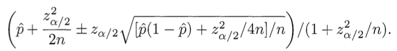
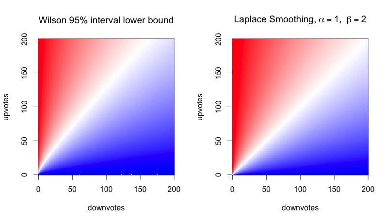
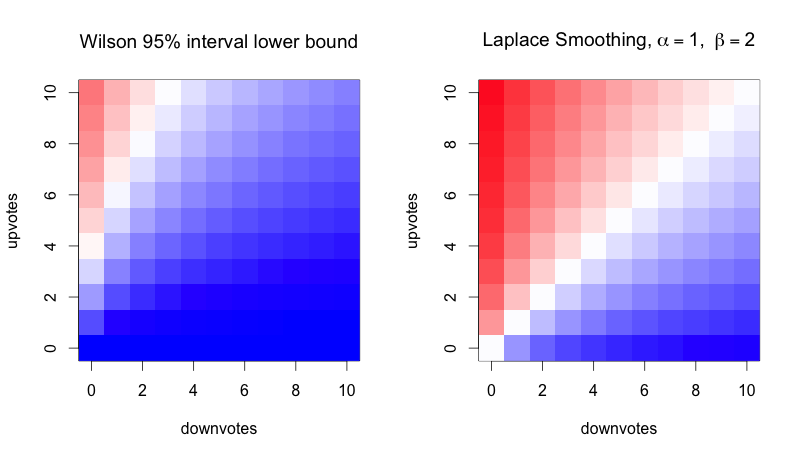
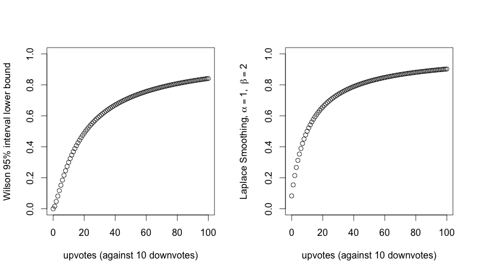

How To Sort By Average Rating
Sunday August 17, 2014
Evan Miller's well-known How Not To Sort By Average Rating points out problems with ranking by "wrong solution #1" (by differences, upvotes minus downvotes) and "wrong solution #2" (by average ratings, upvotes divided by total votes). Miller's "correct solution" is to use the lower bound of a Wilson score confidence interval for a Bernoulli parameter. I think it would probably be better to use Laplace smoothing, because:
- Laplace smoothing is much easier
- Laplace smoothing is not always negatively biased
This is the Wilson scoring formula given in Miller's post, which we'll use to get 95% confidence interval lower bounds:

{kind=link}
(Use minus where it says plus/minus to calculate the lower bound.) Here p̂ is the observed fraction of positive ratings, zα/2 is the (1-α/2) quantile of the standard normal distribution, and n is the total number of ratings.
Now here's the formula for doing Laplace smoothing instead:
(upvotes + $latex \alpha$) / (total votes + $latex \beta$)
Here $latex \alpha$ and $latex \beta$ are parameters that represent our estimation of what rating is probably appropriate if we know nothing else (cf. Bayesian prior). For example, $latex \alpha = 1$ and $latex \beta = 2$ means that a post with no votes gets treated as a 0.5.
The Laplace smoothing method is much simpler to calculate - there's no need for statistical libraries, or even square roots!
Does it successfully solve the problems of "wrong solution #1" and "wrong solution #2"? First, the problem with "wrong solution #1", which we might summarize as "the problem with large sample sizes":
| upvotes | downvotes | wrong #1 | wrong #2 | Wilson | Laplace | |
| first item | 209 | 50 | 159 | 0.81 | 0.7545 | 0.80 |
| second item | 118 | 25 | 93 | 0.83 | 0.7546 | 0.82 |
All the methods agree except for "wrong solution #1" that the second item should rank higher.
Then there's the problem with "wrong solution #2", which we might summarize as "the problem with small sample sizes":
| upvotes | downvotes | wrong #1 | wrong #2 | Wilson | Laplace | |
| first item | 1 | 0 | 1 | 1.0 | 0.21 | 0.67 |
| second item | 534 | 46 | 488 | 0.92 | 0.90 | 0.92 |
All the methods agree except for "wrong solution #2" that the second item should rank higher.
How similar are the results for the Wilson method and the Laplace method overall? Take a look: here color encodes the score, with blue at 0.0, white at 0.5, and red at 1.0:

{kind=link}
They're so similar, you might say, that you would need a very good reason to justify the complexity of the calculation for the Wilson bound. But also, the differences favor the Laplace method! The Wilson method, because it's a lower bound, is negatively biased everywhere. It's certainly not symmetrical. Let's zoom in:

{kind=link}
With the Wilson method, you could have three upvotes, no downvotes and still rank lower than an item that is disliked by 50% of people over the long run. That seems strange.
The Laplace method does have its own biases. By choosing $latex \alpha=1$ and $latex \beta=2$, the bias is toward 0.5, which I think is reasonable for a ranking problem like this. But you could change it: $latex \alpha=0$ with $latex \beta=1$ biases toward zero, $latex \alpha=1$ with $latex \beta=0$ biases toward one. And $latex \alpha=100$ with $latex \beta=200$ biases toward 0.5 very strongly. With the Wilson method you can tune the size of the interval, adjusting the confidence level, but this only adjusts how strongly you're biased toward zero.
Here's another way of looking at the comparison. How do the two methods compare for varying numbers of upvotes with a constant number (10) of downvotes?

{kind=link}
Those are similar curves. Not identical - but is there a difference to justify the complexity of the Wilson score?
In conclusion: Just adding a little bit to your numerators and denominators (Laplace smoothing) gives you a scoring system that is as good or better than calculating Wilson scores.
[code for this post]
This post was originally hosted elsewhere.